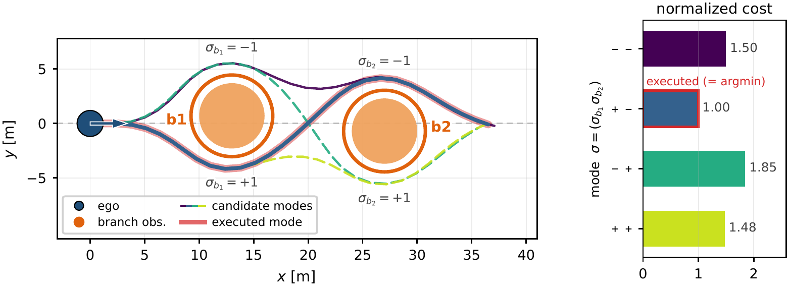
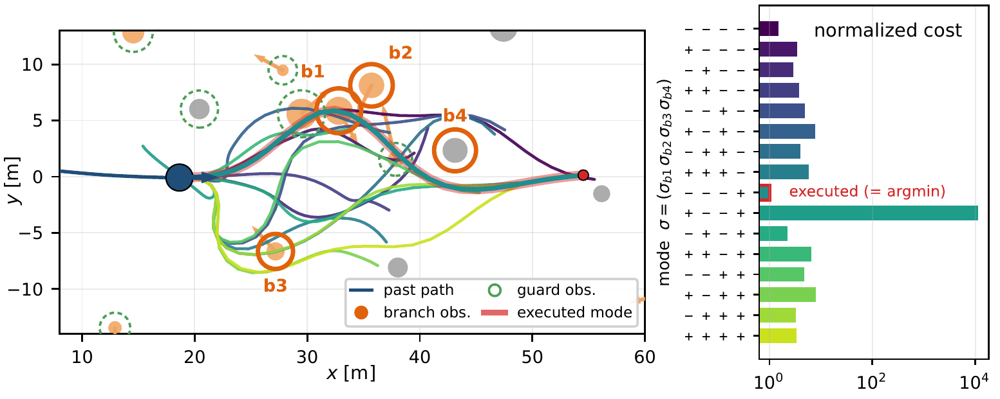
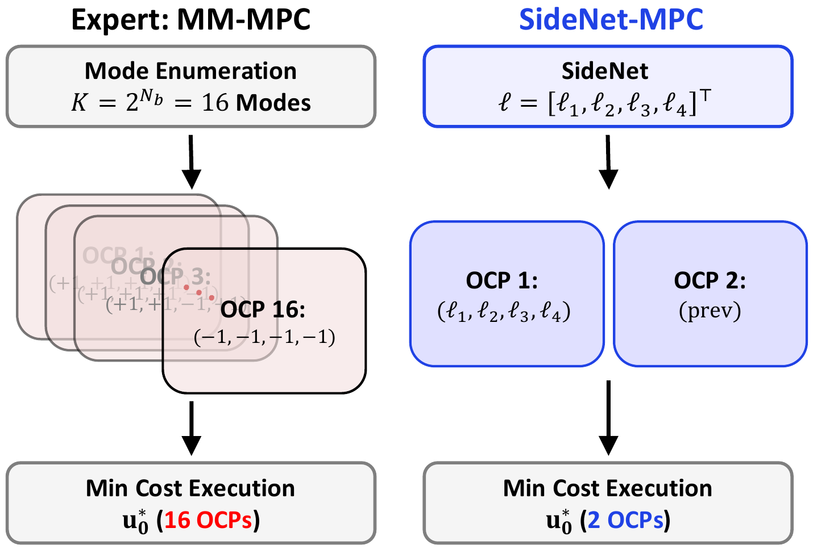
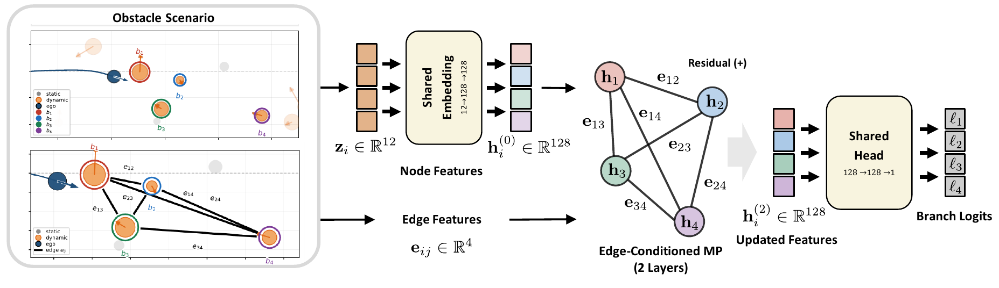
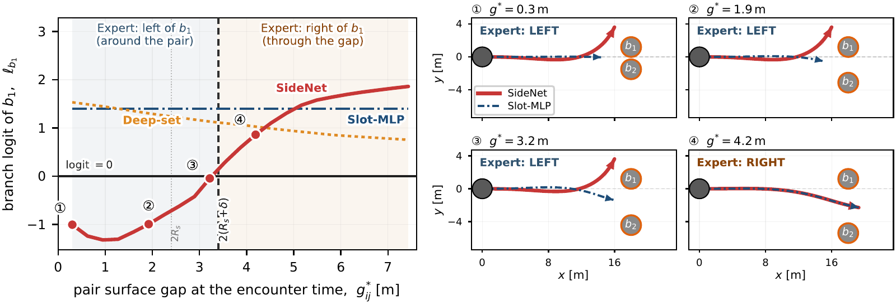
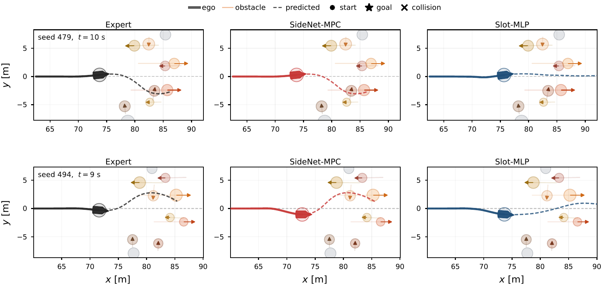

Manuscript under reviewImitation learningModel predictive controlGraph neural networks
Imitation Learning of Avoidance Modesfor Computationally Efficient Multimodal MPC
A graph network learns the avoidance side of each obstacle from a multimodal MPC expert, cutting sixteen OCPs per control period to at most two while the safety constraints stay in the optimization.
Changyu Lee1,†, Byung-Kwan Lee2, Kanghoon Yoon3
1Kongju National University · 2NVIDIA Research · 3KAIST
Faster on one core than the expert on sixteen, at 93% of its success
18.6ms
per control period on one core
−48%
computation vs. the expert's 35.5 ms on 16 threads
93%
of the expert's successes, 90 vs. 97 (p = 0.065)
Why multimodal MPC is expensive
Every combination of avoidance sides is its own OCP
With TC-CBF constraints, each obstacle is passed on a fixed side, so the expert solves one OCP per side combination: K = 2Nb per control period.

Two branch obstacles, K = 4. Four local optima, one per homotopy class.

Four branch obstacles, K = 16. The budget the learned proposal replaces.
SideNet-MPC
Propose one mode, keep the last one, solve at most two
1
Select
4 branch and 8 guard obstacles, by the expert's rule.
›
2
Propose
SideNet predicts one side per branch obstacle.
›
3
Remember
The previous mode is the second candidate.
›
4
Solve
At most two TC-CBF constrained OCPs.
›
5
Arbitrate
The expert's rule keeps the previous mode unless the proposal is clearly cheaper.

Block structure. Expert: all sixteen modes. SideNet-MPC: proposal and previous mode.
One solve when the proposal matches the previous mode.
The network never outputs a control input.
At most two OCPs, however many branch obstacles.
One planning step. At the same state, the expert solves all 16 modes and SideNet-MPC only the network proposal and the previous mode. The same selection rule keeps the previous mode for both, so the expert (red) and SideNet-MPC (blue) execute the same maneuver; candidates in grey. Logged solver output, Mixed traffic seed 477, click to replay.
Graph neural network
Edges carry the gap the vehicle will actually meet
A neighbor can close the gap an isolated side choice would use, so SideNet links the branch obstacles in a complete graph with pair-gap edges.
SideNet, one forward pass.A shared MLP embeds the 12 inputs of each branch obstacle into a node feature.Schematic scene with illustrative logits; switch the gap to see the side of b1 reverse, as in the gap sweep below.Paper figure

NODES
One slot per obstacle
Relative position, velocity and radius, plus the ego state. Permutation-equivariant.
EDGES
Gap at the encounter
Current gap, gap at the encounter time, and closing rate.
SIZE
Small and fast
94,851 parameters, 0.4 ms per forward pass on one core.
Why pairwise edges
Only the graph proposer reverses the side, and where the expert does
The partner obstacle slides away, widening the pair gap from 0.3 to 7.4 m. The expert switches sides between 3.22 and 3.54 m.

Side logit against the pair gap. Shading: the expert's side; dashed: ws = 3.4 m. Right: modes proposed by SideNet (solid) and Slot-MLP (dash-dotted) at four gaps.
Slot-MLPConstant +1.403, and +1.184 for Slot-MLP-wide: the partner is not an input.
Deep-setFalls from +1.533 to +0.755 as the gap widens, but never changes side.
SideNet−1.322 to +1.862, crossing zero at 3.22–3.54 m.
Training data
Supervision from the expert's own cost records
77,925steps from 210 expert rollouts
16 → 1label = lowest of the 16 recorded costs
×2left–right mirror
One collection rollout. Every control period becomes one labelled step.
Closed-loop evaluation
Three deterministic scenes
Baselines change only the proposer and share the training data: Slot-MLP and Slot-MLP-wide see one obstacle at a time, Deep-set pools them without pair edges.
The three scenes, replayed
Each scene gives the three controllers identical obstacles. Trails run from red at the start to violet at the end; rings mark the obstacles whose sides are being decided.
Around, or through before it shuts. The gate narrows from 8 to 2 m as the vehicle arrives. The expert and SideNet-MPC go around the lower obstacle on the same path. Slot-MLP speeds up to 3.5 m/s and slips through the closing gap with 0.14 m to spare.
✓Expert19.8 s · 0.57 m
✓SideNet-MPC19.8 s · 0.57 m
✓Slot-MLP, early pass16.6 s · 0.14 m
Every gate must be bypassed. Each 2.6 m gap is narrower than the vehicle needs. The expert and SideNet-MPC go around all three gates. Slot-MLP aims at the blocked gap of the first gate and stops in front of it at 19 s, where it stays until the 150 s timeout.
✓Expert52.0 s
✓SideNet-MPC52.2 s
✕Slot-MLP, deadlock at gate 1timeout
Stay on the open side. All three pass the first obstacle on the left. Once the gate’s second obstacle comes into play, the expert and SideNet-MPC bypass the gate on the left as well. Slot-MLP heads back toward the path, steers into the hull-wide gap and stops in front of it at x ≈ 42 m.
✓Expert29.4 s
✓SideNet-MPC29.4 s
✕Slot-MLP, deadlock at the gaptimeout
Arrival time · minimum clearance. The closing gate plays at 2× real time and the other two at 3×; those two replays end shortly after the expert arrives, while Slot-MLP stays stopped until the 150 s timeout. Click to replay. Slot-MLP-wide and Deep-set take the same early pass at the closing gate and also time out at the staggered gates (Deep-set at gate 1, Slot-MLP-wide at gate 2); at the obstacle and gate, Slot-MLP-wide times out and Deep-set arrives at 29.4 s.
Mixed traffic · 100 seeds
The expert's success within noise, on one core
Ten head-on, crossing, overtaken and static obstacles per seed. SideNet-MPC is seven runs behind the expert, not significant (p = 0.065), and ahead of every proposer without pair edges.
Successful runs
out of 100 seed-matched runs
Computation time per control period
mean, milliseconds
Closed-loop Monte Carlo results on mixed traffic, 100 seeds
Controller
Parameters
Success
Collision
Timeout
Arrival [s]
Time [ms]
Expert (16 OCPs)
—
97
3
0
37.3 ± 9.1
35.5
SideNet-MPC
94,851
90
10
0
35.5 ± 7.4
18.6
Slot-MLP
9,217
82
18
0
35.7 ± 8.4
19.0
Slot-MLP-wide
95,017
83
17
0
35.5 ± 8.4
19.2
Deep-set
17,473
80
20
0
34.7 ± 5.9
19.1
Arrival averages successful runs. Expert: 16 OCPs on 16 threads; learned rows: at most two on one core (Intel Core Ultra 7 270K Plus), all timed in one session. McNemar p vs. SideNet-MPC: expert 0.065, Slot-MLP 0.096, Slot-MLP-wide 0.118, Deep-set 0.052.

Two seeds, 2–3 s before Slot-MLP collides. The expert and SideNet-MPC take the same side; Slot-MLP plans into a closing gap.
Three of the 100 runs, replayed
Each seed gives the three controllers identical traffic. Trails run from red at the start to violet at the end; rings mark the obstacles whose sides are being decided.
Same side, same path. SideNet-MPC reproduces the expert’s pass below the crossing group at a third of its computation time. Slot-MLP keeps straight, north of their route, and is hit at 12.4 s.
✓Expert34.0 s · 38.2 ms
✓SideNet-MPC34.0 s · 11.8 ms
✕Slot-MLPcollision at 12.4 s
A closing gap. The expert and SideNet-MPC pass above the obstacles crossing the corridor. Slot-MLP stays low, in the gap they are closing, and collides at 11.2 s.
✓Expert29.8 s · 33.8 ms
✓SideNet-MPC29.6 s · 14.8 ms
✕Slot-MLPcollision at 11.2 s
A dense cluster. All three slow to a crawl in front of a cluster near x = 75 m. SideNet-MPC clears it over the top at 28 s and the expert at 48 s; Slot-MLP is still inside it when it is hit at 23.2 s.
✓Expert62.4 s · 36.9 ms
✓SideNet-MPC43.0 s · 18.9 ms
✕Slot-MLPcollision at 23.2 s
Arrival time · mean computation time per control period. Seeds chosen for illustration among runs that the expert and SideNet-MPC complete and Slot-MLP does not; the table counts all 100. 3× real time, click to replay.
Conclusion
A learned mode decision without a learned control input
What the study shows
Two OCPs instead of sixteen, at 93% of the expert's success.
Every executed input comes from a TC-CBF constrained OCP.
Pair-gap edges, not extra capacity, carry the side decision.
Next steps
Extend the graph from the branch obstacles to the full selected set.